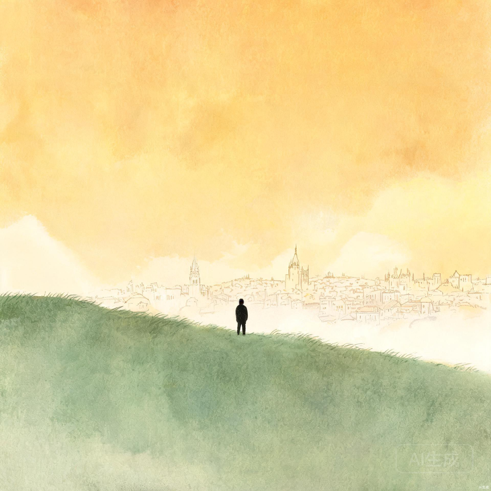
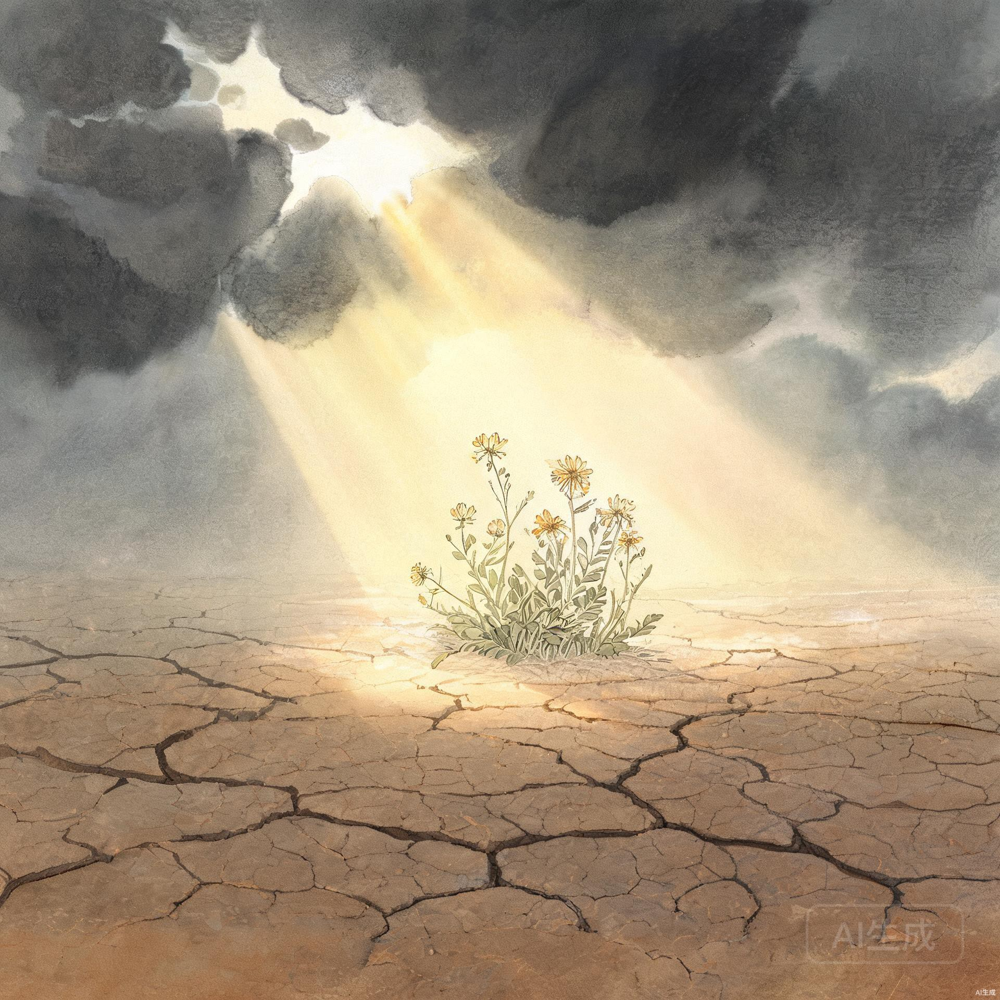

为什么有些人蒙怜悯，我们心里反而不舒服？这个问题很扎心，却不得不问。我们嘴上说恩典，心里却藏着一道隐形的"不配清单"——谁伤害过我，谁太虚伪，谁最好别过得太好，心里记得一清二楚。听见那个人倒霉，嘴上不说，心里有一丝痛快；听见那个人被恩待，嘴上说"感谢"，心里却隐隐觉得不公平。
这才是真正的问题：我们不是不知道恩典，我们是不太愿意把恩典分给某些人。
约拿的故事，离我们并不远。他真正的问题，不只是他一开始逃跑，更是后来他坐在城外，等着看尼尼微出事。
你想想这个画面：一个有重托的人，嘴上替生命的主人传话，心里却盼着一座城灭亡。他不是不知道生命的主人有怜悯——恰恰相反，他太知道了，所以他一开始才逃。因为约拿知道，只要尼尼微人悔改，生命的主人很可能就怜悯他们。

尼尼微是一座罪恶深重、残暴凶狠的城。按人的眼光看，他们确实不配。约拿心里的账本大概是这样写的：
✦ 这种人悔改，我不舒服
✦ 这种人被赦免，我接受不了
✦ 这种人还能被怜悯，那我受的委屈怎么算？
有没有那么一个人，你一想到他被恩待，心里就不平？有没有那么一个人，你觉得他受苦才合理，他蒙福就不公平？有没有那么一个人，你嘴上不说，但心里早就判了他"不配"？
这才是问题的核心：我们不是不懂恩典，我们是希望恩典只临到自己喜欢的人。
恩典如果只给配得的人，那还叫恩典吗？工资是配得的，奖赏是挣来的，可恩典不是。恩典就是给不配的人。若是配得，就不是恩典，是报酬。
配得才给
努力就能争取
不配也给
无法用行为争取
一个人一边说自己是蒙恩的人，一边又在心里说别人不配蒙恩，这里面藏着很深的骄傲。这种骄傲不一定很张扬，它不会说"我比别人强"，但它会说：
我们嘴上承认自己是罪人，心里却把罪人分了等级：
我的错是软弱
我需要机会
他的错是活该
他不配有机会
这不就是我们里面那个小小的审判台吗？我们希望生命的主人对自己有耐心，却希望他对别人快点出手；希望自己有悔改的机会，却不愿给别人悔改的空间；希望自己的软弱被理解，却希望别人的失败被定罪。
生命的主人问约拿："你这样发怒合乎理吗？"这句话不只是问约拿，也是问我们。
你恨那个人，也许有原因；你受过伤，也许是真的；你看见恶，也许不是错觉。可问题是——
这几个问题，一问就露馅。我们说"他应该受报应"，其实心里想的是"他终于也该痛苦一下了"。我们说"这种人不配被原谅"，其实心里想的是"我不想看见他被恩待"。

这不是说恶不严重。罪就是罪，伤害就是伤害，该承担后果的仍要承担。真理从来不是让我们对恶装瞎，也不是让受伤的人假装没事。
我们可以设立边界，可以远离伤害，可以把罪交给合适的秩序处理——但我们不能坐在生命的主人的位置上，说：
因为一旦我们这样说，就说明我们忘了自己也是被怜悯的人。
真正认识恩典的人，不是看不见别人的恶，而是不敢忘记自己的恶；不是对罪没有立场，而是不敢把自己装成无罪的审判官；不是所有事都算了，而是把报复的权柄交还给生命的主人。
他说：他愿意恩待谁，就恩待谁；他愿意怜悯谁，就怜悯谁。这不是在说生命的主人随便做事，而是在说，恩典不是人可以操控的东西。
怜悯不是我表现好争来的，也不是别人坏一点就自动失去的。恩典的根源，不在人的资格里，而在生命的主人的怜悯里。
✦ 它救我，也可能救我不喜欢的人
✦ 它临到我，也可能临到我觉得不配的人
✦ 如果恩典只给配得的人，那我们所有人都没份
✦ 包括我，包括你，也包括那个你心里觉得不配的人
所以，不要替生命的主人筛选谁可以被怜悯。我们能做的，是恨恶罪，却不抢夺审判的位置；守住边界，却不喂养报复的心；承认伤害，却把最终的主权交还给他。